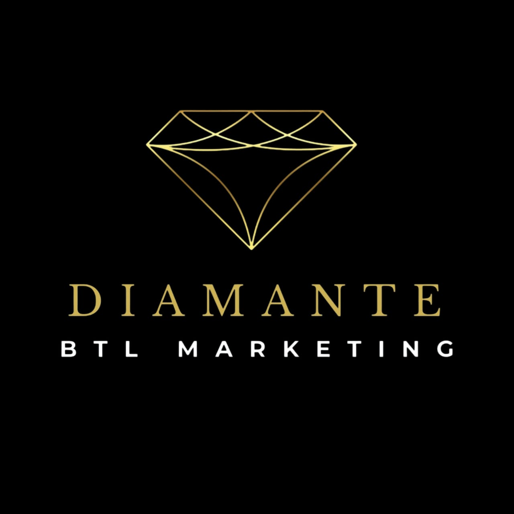

Edecanes en Toluca para eventos que se notan
Personal presentable, puntual y capacitado para ferias, congresos, activaciones y lanzamientos.
Cotizar por WhatsAppVer perfiles
Nuestro equipo
 Foto de edecanes 1
Foto de edecanes 1
 Foto de edecanes 2
Foto de edecanes 2
 Foto de edecanes 3
Foto de edecanes 3
El BTL (del inglés Below the Line, que significa «debajo de la línea»)
es una técnica de publicidad y marketing que utiliza estrategias directas, no masivas y muy segmentadas para conectar de manera personal con el consumidor. A diferencia de los medios tradicionales (como la televisión o la radio), el BTL busca la interacción cara a cara y la experiencia directa. Características principales
No masivo
Enfoque experiencial
Menor costo
Medible
Va dirigido a nichos específicos de mercado o públicos muy determinados.
Busca que el consumidor viva, sienta y recuerde la marca en lugar de solo ver un anuncio.
Requiere presupuestos más bajos en comparación con las grandes campañas de medios masivos.
Permite obtener una retroalimentación rápida y precisa del comportamiento del cliente.
Ejemplos comunes de BTL
- Activaciones de marca: Eventos en vivo o dinámicas sorpresas en centros comerciales o calles.
- Marketing de guerrilla: Acciones creativas e inverosímiles en espacios públicos para llamar la atención por sorpresa.
- Promociones en el punto de venta: Degustaciones, exhibidores especiales o demostraciones de producto.
- Marketing directo y digital segmentado: Correos electrónicos personalizados o mensajes dirigidos a bases de datos específicas.
Qué podemos cubrir
Edecanes de imagen
Recepción, registro y atención en stands y eventos corporativos.
Activaciones BTL
Promoción directa, volanteo y muestreo de producto en punto de venta.
Congresos y ferias
Acomodo de invitados, acreditaciones y apoyo logístico.